调试
你可以使用 Microsoft C# 扩展在 Visual Studio Code 中调试 C# 应用程序。
运行和调试
C# 扩展以及 C# Dev Kit 提供了多种方式来运行和调试你的 C# 应用程序。
要在不使用 C# Dev Kit 的情况下运行和调试，请参阅 Microsoft C# 扩展的 GitHub 页面 获取文档。
使用 F5 调试
安装 C# Dev Kit 扩展后，如果调试视图中没有可选的调试配置，你可以打开一个 .cs 文件，然后按 kb(workbench.action.debug.start) 开始调试项目。调试器将自动查找你的项目并开始调试。如果你有多个项目，它会提示你选择要开始调试的项目。
你也可以从 VS Code 侧边栏的运行和调试视图中启动调试会话。更多信息请参阅 VS Code 中的调试。
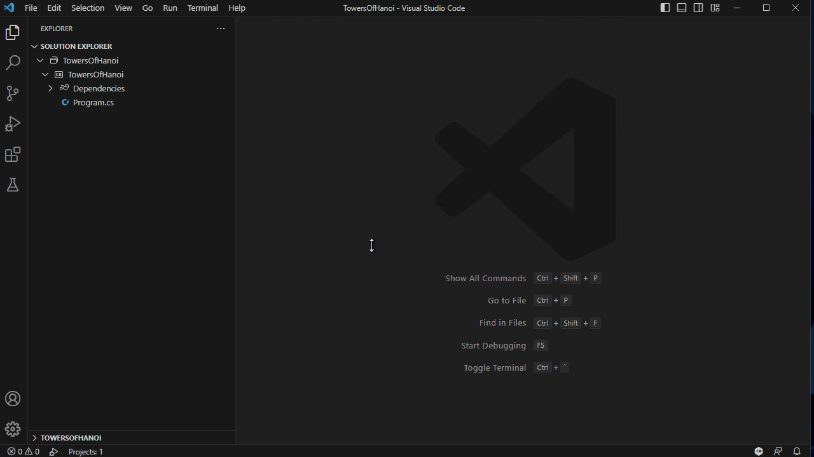
使用解决方案资源管理器调试
安装 C# Dev Kit 扩展后，在解决方案资源管理器中右键单击项目时，会出现调试上下文菜单。
有三个选项：
- 启动新实例 - 这将启动你的项目并附加调试器。
- 不调试启动 - 这将运行你的项目但不附加调试器。
- 逐语句进入新实例 - 这将启动你的项目并附加调试器，但会在代码的入口点处停止。
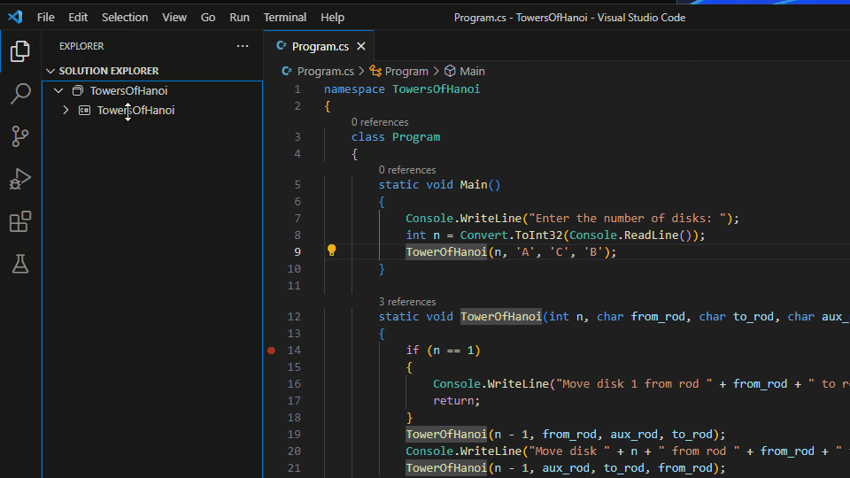
使用命令面板调试
安装 C# Dev Kit 扩展后，你也可以通过命令面板 kb(workbench.action.showCommands) 使用调试：选择并开始调试命令来启动调试。
注意：这会在你的调试下拉列表中添加一个启动配置条目。
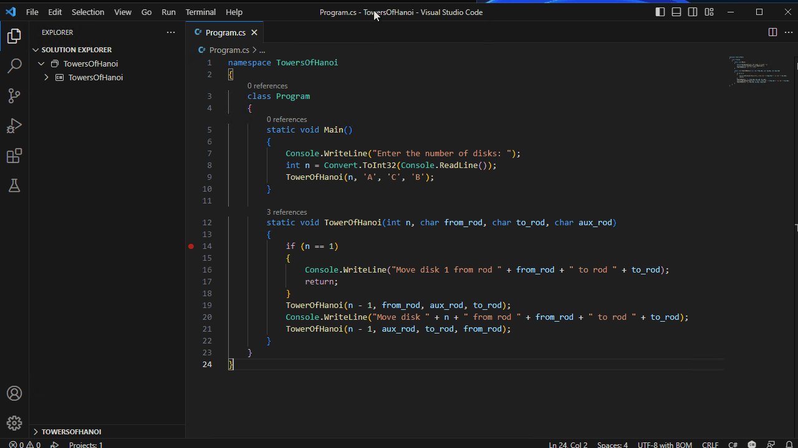
使用动态（内存中）启动配置调试
安装 C# Dev Kit 扩展后，你可以创建动态启动配置。创建方式取决于你的项目是否已有 launch.json 文件。
已有的 launch.json
如果你已有 launch.json，可以转到调试视图，选择下拉菜单，然后选择 C# 选项。这会为你提供一系列可以添加到下拉列表中的启动目标。选择后，你可以按 kb(workbench.action.debug.start) 或使用新生成的配置开始调试。
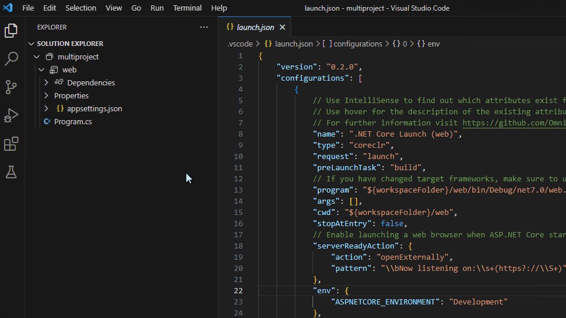
没有 launch.json
如果你的项目中没有 launch.json，你可以在调试视图中的显示所有自动调试配置中添加和访问这些动态配置。
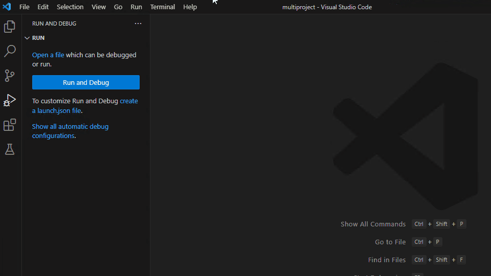
移除动态（内存中）启动配置
你可以通过命令面板 kb(workbench.action.showCommands) 使用调试：选择并开始调试命令来移除生成的配置。
在下拉列表中，它会列出你所有现有的调试配置。如果你将鼠标悬停在动态配置上，右侧会出现一个可点击的垃圾桶图标。你可以选择该图标来移除动态配置。
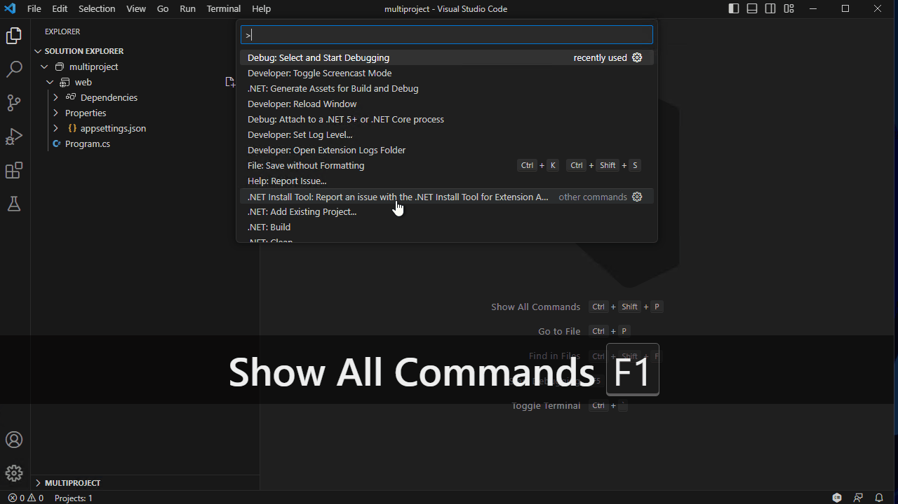
使用编辑器调试/运行按钮调试
当 .cs 文件在编辑器中打开时，可以通过编辑器窗口右上角的按钮访问运行和调试选项。这些操作将使用当前文件查询项目系统并确定要启动的关联项目。
两个选项分别是：
-
运行与此文件关联的项目：这将使用调试适配器以noDebug: true启动你的程序。 -
调试与此文件关联的项目：这将在调试器下启动你的程序。
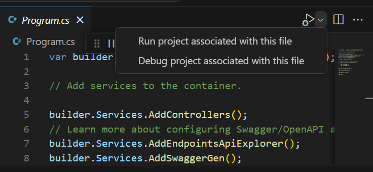
使用 launch.json 调试
如果你正在使用 C# Dev Kit，我们建议不要使用此选项。但是，如果你需要直接修改调试配置，请参阅 为 C# 调试配置 launch.json。
附加到进程
你可以通过命令面板 kb(workbench.action.showCommands) 运行调试：附加到 .NET 5+ 或 .NET Core 进程命令来附加到 C# 进程。
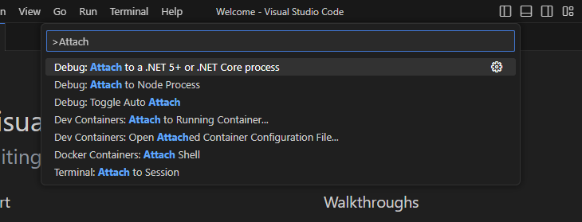
配置选项
有很多选项和设置可用于配置调试器。你可以使用 launchSettings.json、VS Code 用户设置 来修改调试选项，或直接修改你的 launch.json。
launchSettings.json
如果你有来自 Visual Studio 的 launchSettings.json，你应该会看到使用 通过 F5 运行 或 通过命令面板运行 时列出的配置文件。
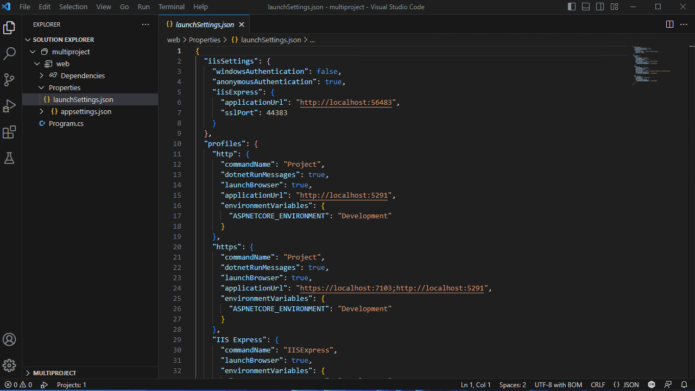
有关更多详细信息，请参阅 配置 C# 调试。
用户设置
如果你有在使用 C# 调试器时要更改的设置，你可以在文件 > 首选项 > 设置 (kb(workbench.action.openSettings)) 下找到这些选项并搜索它们。
csharp.debug.stopAtEntry- 如果为 true，调试器应在目标的入口点停止。此选项默认值为false。csharp.debug.console- 启动控制台项目时，指示目标程序应启动到哪个控制台。注意： 此选项仅用于 'dotnet' 调试配置类型。internalConsole[默认] - VS Code 的调试控制台。此模式允许你在一个地方查看来自调试器和目标程序的消息。有关更多详细信息，请参阅 完整文档。integratedTerminal- VS Code 的集成终端。externalTerminal- 可以通过用户设置配置的外部终端。
csharp.debug.sourceFileMap- 将构建时路径映射到本地源位置。所有构建时路径的实例都将替换为本地源路径。
示例：
{\"\":\" \"} csharp.debug.justMyCode- 启用时（默认），调试器仅显示和单步执行用户代码（"我的代码"），忽略系统代码以及其他已优化或没有调试符号的代码。更多信息。csharp.debug.requireExactSource- 标志，要求当前源代码与 pdb 匹配。此选项默认值为true。csharp.debug.enableStepFiltering- 标志，启用跳过属性和运算符的单步执行。此选项默认值为true。csharp.debug.logging.exceptions- 标志，确定是否应将异常消息记录到输出窗口。此选项默认值为true。csharp.debug.logging.moduleLoad- 标志，确定是否应将模块加载事件记录到输出窗口。此选项默认值为true。csharp.debug.logging.programOutput- 标志，确定当不使用外部控制台时，是否应将程序输出记录到输出窗口。此选项默认值为true。csharp.debug.logging.diagnosticsLog- 用于诊断调试器问题的各种设置。csharp.debug.logging.browserStdOut- 标志，确定是否应将启动 Web 浏览器的 stdout 文本记录到输出窗口。此选项默认值为true。csharp.debug.logging.elapsedTiming- 如果为 true，引擎日志包含adapterElapsedTime和engineElapsedTime属性，以指示请求所花费的时间（以微秒为单位）。此选项默认值为false。csharp.debug.logging.threadExit- 控制目标进程中线程退出时是否记录消息。此选项默认值为false。csharp.debug.logging.processExit- 控制目标进程退出或调试停止时是否记录消息。此选项默认值为true。csharp.debug.suppressJITOptimizations- 如果为 true，当优化的模块（在 Release 配置中编译的 .dll）加载到目标进程中时，调试器会要求即时编译器生成禁用了优化的代码。更多信息csharp.debug.symbolOptions.searchPaths- 用于搜索 .pdb 文件的符号服务器 URL（示例：http://MyExampleSymbolServer）或目录（示例：/build/symbols）的数组。这些目录将在默认位置（模块旁边和 pdb 最初放置的路径）之外进行搜索。csharp.debug.symbolOptions.searchMicrosoftSymbolServer- 如果为true，则将 Microsoft 符号服务器 (https://msdl.microsoft.com/download/symbols) 添加到符号搜索路径中。如果未指定，此选项默认值为false。csharp.debug.symbolOptions.searchNuGetOrgSymbolServer- 如果为true，则将 NuGet.org 符号服务器 (https://symbols.nuget.org/download/symbols) 添加到符号搜索路径中。如果未指定，此选项默认值为false。csharp.debug.symbolOptions.cachePath- 从符号服务器下载的符号应缓存的目录。如果未指定，在 Windows 上调试器默认使用%TEMP%\\SymbolCache，在 Linux 和 macOS 上调试器默认使用~/.dotnet/symbolcache。csharp.debug.symbolOptions.moduleFilter.mode- 控制模块筛选器运行的两个基本操作模式中的哪一个。loadAllButExcluded- 加载所有模块的符号，除非该模块在excludedModules数组中。loadOnlyIncluded- 不尝试加载任何模块的符号，除非它在includedModules数组中，或通过includeSymbolsNextToModules设置包含。
csharp.debug.symbolOptions.moduleFilter.excludedModules- 调试器不应为其加载符号的模块数组。支持通配符（示例：MyCompany.*.dll）。除非mode设置为loadAllButExcluded，否则此属性将被忽略。csharp.debug.symbolOptions.moduleFilter.includedModules- 调试器应为其加载符号的模块数组。支持通配符（示例：MyCompany.*.dll）。除非mode设置为loadOnlyIncluded，否则此属性将被忽略。csharp.debug.symbolOptions.moduleFilter.includeSymbolsNextToModules- 如果为 true，对于不在includedModules数组中的任何模块，调试器仍将在模块本身和启动的可执行文件旁边检查，但不会检查符号搜索列表中的路径。此选项默认值为true。
除非 mode 设置为 loadOnlyIncluded，否则此属性将被忽略。
csharp.debug.allowFastEvaluate- 当为 true（默认状态）时，调试器将尝试通过模拟简单属性和方法的执行来进行更快的求值。csharp.experimental.debug.hotReload- 当为 true 时，如果目标应用程序支持热重载，调试器将在调试时启用应用更改。csharp.debug.hotReloadOnSave- 当为 true（默认状态）时，调试器将在文件保存时自动应用代码更改。csharp.debug.hotReloadVerbosity- 控制 C# 热重载输出窗口的日志详细程度。可以设置为minimal（默认）、detailed或diagnostic。如果热重载行为异常，建议提高详细程度级别。csharp.debug.terminateChildProcesses- 当调试会话结束时，如果设置为true，调试器将终止被调试程序及其生成的所有子进程。如果设置为false，则仅终止被调试程序本身，子进程将保持运行。此选项默认值为false。- 在 Windows 上，子进程使用作业对象进行跟踪。需要比调试会话更持久的进程可以通过在调用
CreateProcess时传递CREATE_BREAKAWAY_FROM_JOB标志来选择退出。断点
- 在 Windows 上，子进程使用作业对象进行跟踪。需要比调试会话更持久的进程可以通过在调用
C# 调试器支持各种断点，例如源代码行断点、条件断点和日志点。
断点 - 条件断点
借助表达式求值功能，调试器还支持条件断点。你可以设置断点在表达式求值为 true 时中断。
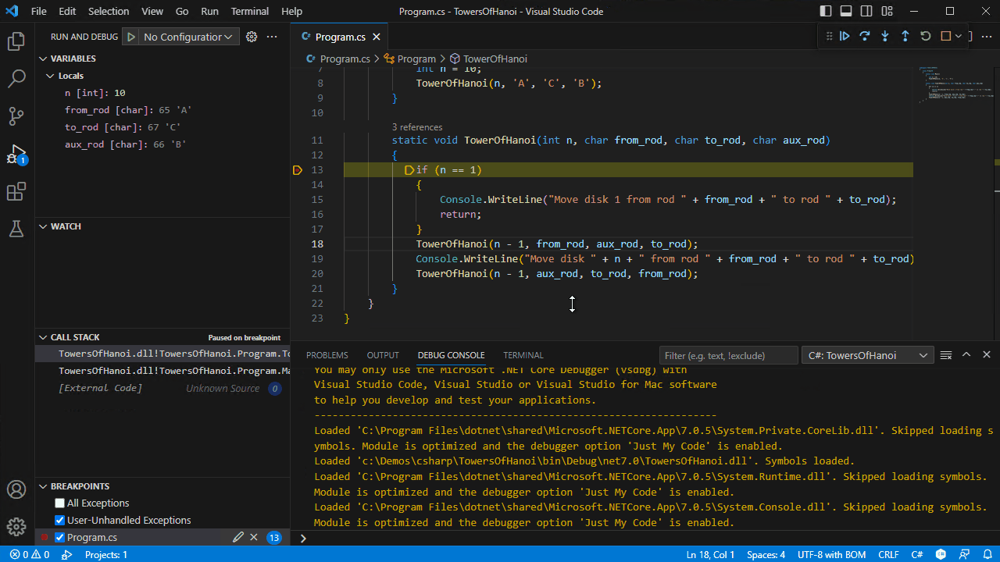
断点 - 函数断点
调试器还支持函数断点。你可以通过单击调试窗格中"断点"部分的 + 来设置断点在特定函数上中断。
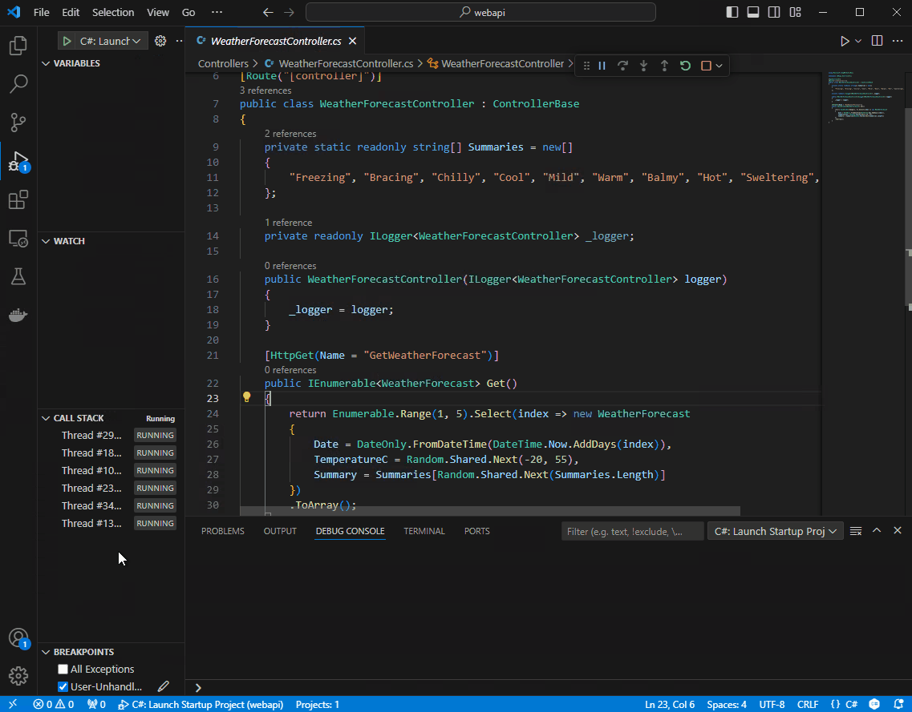
断点 - 日志点
日志点（在 Visual Studio 中也称为跟踪点）允许你将输出发送到调试控制台，而无需编辑代码。它们与断点不同，因为它们不会停止应用程序的执行流。
要添加日志点，请在代码行最左侧边距处右键单击。选择添加日志点并输入你要记录的消息。当日志点被命中时，花括号（'{' 和 '}'）之间的任何表达式都将被求值。
日志消息中还支持以下标记：
| 标记 | 描述 | 示例输出 | ||
|---|---|---|---|---|
| -------------- | ----------- | ----------- | ||
| $FILEPOS | 当前源文件位置 | C:\sources\repos\Project\Program.cs:4 | ||
| $FUNCTION | 当前函数名称 | Program.<Main>$ | ||
| $ADDRESS | 当前指令 | 0x00007FFF83A54001 | ||
| $TID | 线程 ID | 20668 | ||
| $PID | 进程 ID | 10028 | ||
| $TNAME | 线程名称 | <无线程名称> | ||
| $PNAME | 进程名称 | C:\sources\repos\Project\bin\Debug\net7.0\console.exe | ||
| $CALLER | 调用函数名称 | void console.dll!Program.Foo() | ||
| $CALLSTACK | 调用堆栈 | void console.dll!Program.Bar() void console.dll!Program.Foo() void console.dll!Program.<Main>$(string[] args) [外部代码] | ||
| $TICK | 滴答计数（来自 Windows GetTickCount） | 28194046 | ||
| $HITCOUNT | 此断点被命中的次数 | 5 |
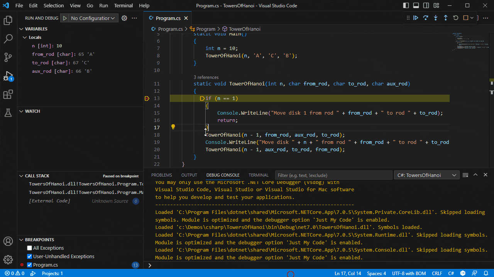
断点 - 触发型断点
触发型断点是在另一个断点被命中后自动启用的断点。它们在诊断仅在特定前提条件之后才发生的代码失败情况下非常有用。
可以通过右键单击字形边距，选择添加触发型断点，然后选择哪个其他断点启用该断点来设置触发型断点。
在异常时停止
C# 调试器支持配置选项，用于在抛出或捕获异常时调试器停止的时机。这是通过运行视图中断点部分的两个不同条目来实现的：
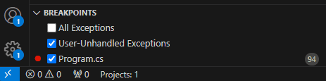
请注意，断点部分将缺少这些条目，直到该文件夹首次使用 C# 调试器进行调试。
勾选所有异常将配置调试器在抛出异常时停止。如果启用了仅我的代码（默认启用），调试器不会在库代码中内部抛出并捕获的异常处中断。但是，如果异常在库代码中抛出并返回到用户代码，调试器将会中断。
勾选用户未处理的异常将配置调试器在非用户代码中捕获到异常，但该异常是在用户代码中抛出或经过了用户代码时停止。成为用户未处理的异常并不总是表示被调试进程中存在错误——可能是用户代码正在实现一个 API 并且预期会引发异常。在许多情况下，确实存在实际问题，因此默认情况下，调试器会在异常变为用户未处理时停止。
异常条件
两个复选框都支持设置条件，仅在选定的异常类型上中断。要编辑条件，请选择铅笔图标（见上图）或右键单击条目并调用编辑条件。条件是一个逗号分隔的要中断的异常类型列表，或者如果列表以 '!' 开头，则是一个要忽略的异常类型列表。
条件示例：
| 条件值示例 | 结果 | ||
|---|---|---|---|
| ------------------------- | -------- | ||
| System.NullReferenceException | 这将仅在空引用异常上中断。 | ||
| System.NullReferenceException, System.InvalidOperationException | 这将在空引用异常和无效操作异常上中断。 | ||
| !System.Threading.Tasks.TaskCanceledException | 这将在除任务取消以外的所有异常上中断。 | ||
| !System.Threading.Tasks.TaskCanceledException, System.NotImplementedException | 这将在除任务取消和未实现以外的所有异常上中断。 |
表达式求值
调试器还允许你在监视窗口以及调试控制台中求值表达式。
热重载
安装 C# Dev Kit 扩展后，调试器允许你在调试时应用 C# 代码更改。
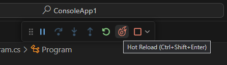
要启用热重载，必须将 csharp.experimental.debug.hotReload 设置为 true，请参阅用户设置了解更多信息。热重载会话仅在目标调试器引擎支持应用代码更改时才会启动。
支持的项目和场景
C# Dev Kit 支持"经典"热重载体验，也称为编辑并继续。你可以在调试时应用代码更改，无论你是停在断点处还是程序正在运行。
截至 2023 年 11 月，某些功能（如 MetadataUpdateHandler，它使 ASP.NET Core 应用程序能够在更改后自动刷新浏览器）尚不可用。也不支持在不调试的情况下应用代码更改。
运行时在 .NET 8 中添加了对在 Linux/macOS 上调试时应用更改的支持，因此在为在这些操作系统上运行的 .NET 应用程序应用代码更改时需要 .NET 8+ 运行时版本。
| 应用程序类型 | 支持使用 C# Dev Kit 进行热重载 | 需要 .NET 8+ | ||
|---|---|---|---|---|
| ------------------ | ----------- | ----------- | ||
| 控制台 | ✅ | 仅限 Linux/macOS | ||
| 测试项目 | ✅ | 仅限 Linux/macOS | ||
| 类库项目 | ✅ | 仅限 Linux/macOS | ||
| ASP.NET Core | ⚠️* _目前仅支持对 .cs 文件的更改_ | 仅限 Linux/macOS | ||
| MAUI | ❌* _即将推出_ | -- | ||
| Unity | ❌ | -- |
有关 C# Dev Kit 当前支持的项目类型的更多信息，请参阅支持的项目。另请参阅 C# Dev Kit 常见问题解答，了解有关排查其他不受支持场景的更多信息。
如何应用代码更改
一旦热重载会话开始并进行了新的更改，你可以通过以下任何操作将这些更改应用到你的应用程序：
| 操作 | 说明 | ||
|---|---|---|---|
| -------------------------------------------------------- | -------------------------------------------------------------------------------------------------------------------------------------------------------------------- | ||
热重载 kbstyle(Ctrl+Shift+Enter) | 应用代码更改，可从调试工具栏使用。 | ||
保存文件 kb(workbench.action.files.save) | 如果 csharp.debug.hotReloadOnSave 设置为 true，则开始应用代码更改。有关更多信息，请参阅用户设置。 | ||
继续 / 逐过程 / 逐语句 / 跳出 kb(workbench.action.debug.continue) / kb(workbench.action.debug.stepOver) / kb(workbench.action.debug.stepInto) / kb(workbench.action.debug.stepOut) | 当在中断状态下进行了更改时（例如，在断点处停止时），这些命令将自动应用它们。 |
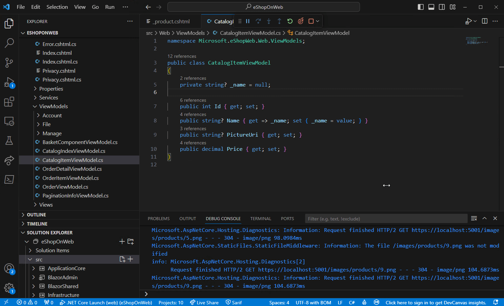
后续步骤
继续阅读以了解：
- 调试 - 了解如何在 VS Code 中为任何语言的项目使用调试器。